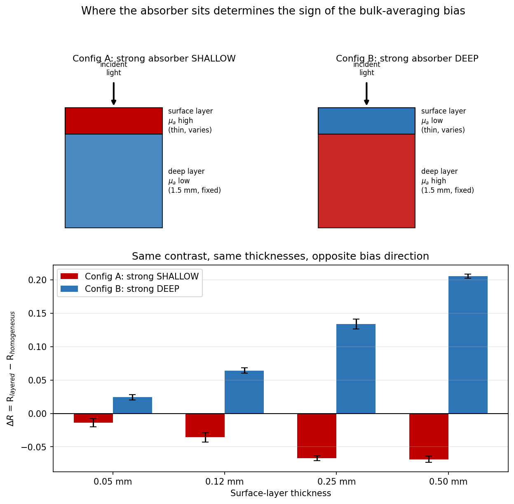

The central finding
Everything below demonstrates one physical result, confirmed independently twice.
Try the simulation yourself
The same underlying physics — Henyey-Greenstein scattering, Fresnel boundaries, weighted-photon absorption — applied to four real media. Watch how photon paths differ, and how diffuse reflectance compares across them.
Reflected
0%
Transmitted
0%
Absorbed
0%
Diffuse reflectance across media tried so far
This is a simplified 2D illustrative simulation for building intuition, not the validated engine. Water presets use physically-ordered illustrative values; skin presets use the actual default parameters from
tissue_optics.py in this repository. For citable, statistically validated numbers, see PROJECT_REPORT.md.
What the real engine found
The actual validated result, from examples/test_inverted_geometry.py — 4 of 4 cases, same contrast and thicknesses, opposite sign.
